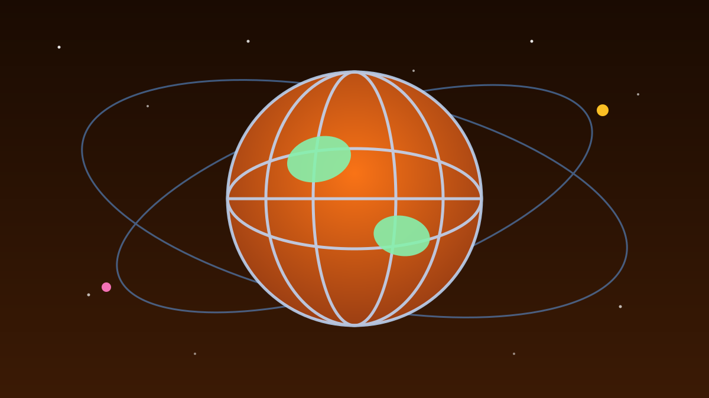

1 / 6

🌍 DUNIA
Dari demo sekolah jadi gelombang nasional
Ratusan aksi protes biaya hidup digelar di seluruh Prancis pada Sabtu, 17 Oktober 2026. Geser buat kronologinya →
2 / 6
📢
Ratusan aksi serentak se-Prancis
Gelombang demonstrasi yang dipicu tingginya biaya hidup dan kenaikan harga bahan bakar meluas di Prancis pada Sabtu (17/10/2026). Ratusan aksi direncanakan di berbagai wilayah, dengan puluhan ribu orang diperkirakan turun ke jalan.
Kementerian Dalam Negeri Prancis memperkirakan ada ratusan aksi, termasuk pemblokiran gerbang tol dan SPBU, serta 90 aksi pawai.
3 / 6
🏫
Awalnya cuma soal sekolah
Protes ini bermula bulan lalu dari sejumlah SMA di kawasan pinggiran utara Paris yang tergolong kurang sejahtera. Kemarahan pelajar dipicu guru yang sering tidak hadir dan fasilitas sekolah yang dinilai buruk.
Isunya lalu meluas jadi gerakan nasional yang menolak ketimpangan sosial, minimnya belanja publik, dan menurunnya standar hidup — didukung guru, orang tua, masyarakat sipil, dan serikat pekerja seperti CGT.
4 / 6
🔥
Bentrokan di Marseille & Paris
Di Marseille, polisi dikerahkan menghadapi demonstran dan bentrokan pecah. Polisi antihuru-hara menembakkan gas air mata ke arah pelajar SMA dan mahasiswa, sementara benda-benda terbakar terlihat di jalan.
Di Paris, polisi juga menembakkan gas air mata dan semprotan merica untuk memukul mundur ribuan demonstran. Aksi ini membangkitkan ingatan pada gerakan Rompi Kuning yang muncul pada 2018 menentang kenaikan biaya hidup.
5 / 6
📊
Sudah 3 pekan, belum ada solusi
Pada aksi Selasa (13/10), Kementerian Dalam Negeri mencatat 161.500 peserta di seluruh Prancis, sementara pihak penyelenggara mengklaim sekitar 480.000 orang. Gelombang protes ini disebut sudah membuat hampir 7.000 orang ditangkap.
Presiden Emmanuel Macron menyebut keluhan pelajar itu sah, tapi menilai mereka "dieksploitasi" kekuatan politik. Ia meminta pemerintah menyiapkan jawaban konkret dalam beberapa pekan.
6 / 6
🤔
Efeknya ke lo apa?
Harga kebutuhan pokok yang naik itu bukan cuma drama Prancis — hampir semua negara lagi ngerasain tekanan yang sama, termasuk harga di warung dekat rumah lo.
Yang bisa dipetik: suara anak muda — yang awalnya cuma soal sekolah — bisa berubah jadi gerakan nasional kalau didengar bareng-bareng.